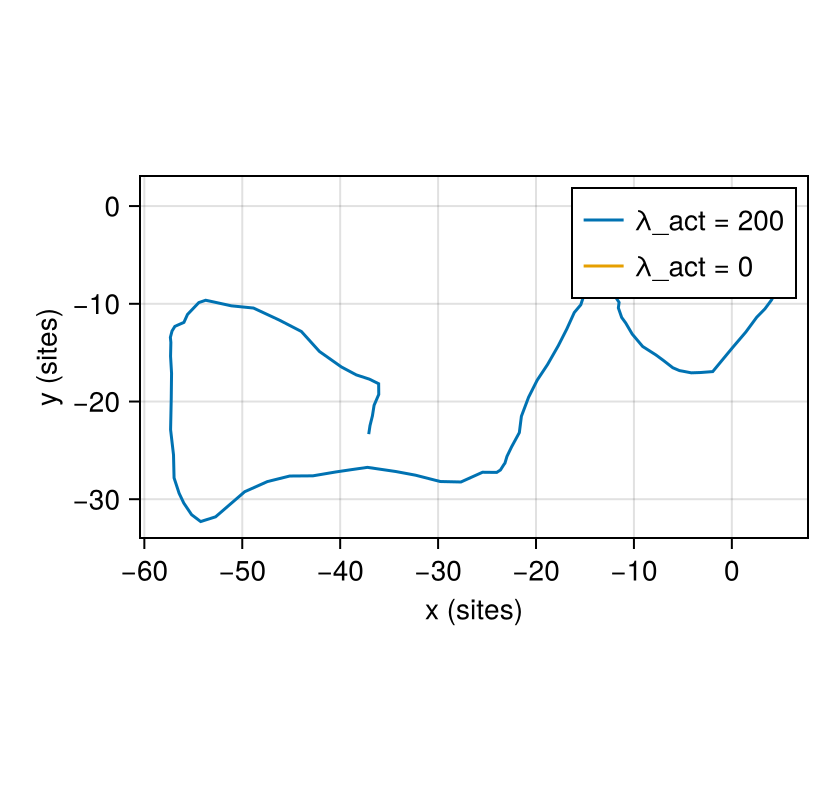

Actin-driven cell migration (the Act model)
A crawling cell pushes its front forward by polymerising actin, and newly protruded regions are the most active. Niculescu, Textor and de Boer (2015) captured this with one extra rule in the cellular Potts model: every site remembers how recently its cell gained it, and copies that extend from active regions are favoured. The positive feedback makes cells polarise and crawl persistently. Wortel and coworkers (2021) used the same model to study how speed and persistence are coupled. This page builds it.
What you will learn
- how a per-site variable stores a memory that the cell writes as it moves;
- how
@on_copyupdates a site at the moment it changes owner, and@after_mcsafter every MCS; - how a drive reads a neighbourhood of a site, through a helper function;
- how a perimeter constraint enters the energy;
- how to follow a migrating cell on a periodic lattice.
The cell sorting and vasculogenesis pages explain the parts used here before.
The papers
- I. Niculescu, J. Textor and R. J. de Boer, "Crawling and gliding: a computational model for shape-driven cell migration", PLoS Comput. Biol. 11, e1004280 (2015), doi:10.1371/journal.pcbi.1004280.
- I. M. N. Wortel, I. Niculescu, P. M. Kolijn, N. S. Gov, R. J. de Boer and J. Textor, "Local actin dynamics couple speed and persistence in a cellular Potts model of cell migration", Biophys. J. 120, 2609 (2021), doi:10.1016/j.bpj.2021.04.036.
The model follows the definitions of the authors' reference implementation, Artistoo. Each site $x$ has an activity $\mathrm{Act}(x)$ between 0 and $\mathrm{Max_{Act}}$. A copy from a source site $u$ into a target site $v$ gets the extra term
\[\Delta H_{\text{Act}} = -\frac{\lambda_{\text{Act}}}{\mathrm{Max_{Act}}} \big(\mathrm{GM}(u) - \mathrm{GM}(v)\big),\]
where $\mathrm{GM}(s)$ is the geometric mean of the activity over $s$ and its neighbours that belong to the same cell (zero for the medium). Extending from an active region into a less active one is favoured; retracting an active region is penalised.
The paper run
The finished model, built step by step below, run at the paper's size, with the paper's starting state, parameters and run length. It is computed outside the docs build:
Paper run — Niculescu et al. (2015) Act model, amoeboid cell (λact = 200, maxact = 20): 200×200 torus, 30 000 MCS (paper: same), seed 1. Initial shape: 23×23 square (unstated in the paper).
The rest of this page builds the model and runs it at a size that takes seconds.
using Potts, PottsModelsStep 1: the lattice
@structural_parameters begin
lattice = (200, 200)
connected = false
end
@lattice Lattice(lattice; boundary = Periodic(), neighborhood = Moore(1))
@relations proposal = Moore(1)A periodic lattice (a torus) with Moore contacts and copies. connected switches the connectivity constraint of Step 8 on or off.
Step 2: cell kinds
@kinds medium cellStep 3: parameters
@parameters begin
λ = 50.0
V₀ = 500.0
λₛ = 2.0
S₀ = 340.0
λ_act = 200.0
max_act = 20.0
T = 20.0
J[kind, kind] = [0.0 20.0; 20.0 100.0]
endThe defaults are the amoeboid cell of Niculescu et al. (Methods, Fig. 6): area 500 with λ = 50, perimeter 340 with λₛ = 2, $\lambda_{\text{Act}} = 200$, $\mathrm{Max_{Act}} = 20$ and $T = 20$. max_act = 80 gives the keratocyte-like cell of the same paper.
Step 4: the activity variable
@variables act(site) = 0.0act(site) is one number per lattice site, changed only by the update rules of Step 7. Every site starts inactive.
Step 5: the energy
cells(cell) => λ * (volume - V₀)^2 + λₛ * (surface - S₀)^2An area constraint and a perimeter constraint. surface is the built-in cell perimeter: the number of (site, Moore neighbour) pairs in which the neighbour belongs to another cell or the medium.
contacts => J[kind, kind′]Step 6: the Act drive
act_mean(s) = geomean(act[n] for n in Moore(1; include_self = true)(s) if owner[n] == owner[s])
@drive copy => -(λ_act / max_act) * (act_mean(source) - act_mean(target))A model can define helper functions of a site. Moore(1; include_self = true)(s) lists s and its 8 neighbours, owner[n] is the cell that owns site n, and geomean is the geometric mean (zero if any value is zero). So act_mean(s) is $\mathrm{GM}(s)$, and the drive is $\Delta H_{\text{Act}}$. The medium's sites have zero activity, so its $\mathrm{GM}$ is zero.
Step 7: writing the activity
@on_copy act[target] ~ ifelse(new != 0, max_act, 0.0)
@after_mcs act ~ max(Pre(act) - 1, 0)@on_copy runs when a copy is accepted: the target site becomes fully active if a cell gained it (new != 0), inactive if the medium did. @after_mcs runs after each MCS: all activities fall by one, down to zero. A site therefore stays active for $\mathrm{Max_{Act}}$ MCS after its cell gained it.
Step 8: an optional connectivity constraint
if connected
@constraint connectivity(cell; rule = :arc_or_pair)
endAt high $\lambda_{\text{Act}}$ a cell can tear apart, as Wortel et al. report. With connected = true copies that would split a cell are forbidden by an "arc or pair" rule on the 8 neighbours of the target site: the copy is allowed if the losing cell forms at most one arc on that ring, or if exactly two cells and no medium are on it. This is the connectivity rule Niculescu et al. use in their multicellular runs.
Step 9: the sweep
@sweep Metropolis(; temperature = T)
endThe whole model
@potts_model ActMigration begin
@structural_parameters begin
lattice = (200, 200)
connected = false
end
@lattice Lattice(lattice; boundary = Periodic(), neighborhood = Moore(1))
@relations proposal = Moore(1)
@kinds medium cell
@parameters begin
λ = 50.0
V₀ = 500.0
λₛ = 2.0
S₀ = 340.0
λ_act = 200.0
max_act = 20.0
T = 20.0
J[kind, kind] = [0.0 20.0; 20.0 100.0]
end
@variables act(site) = 0.0
@energy begin
cells(cell) => λ * (volume - V₀)^2 + λₛ * (surface - S₀)^2
contacts => J[kind, kind′]
end
act_mean(s) = geomean(act[n] for n in Moore(1; include_self = true)(s) if owner[n] == owner[s])
@drive copy => -(λ_act / max_act) * (act_mean(source) - act_mean(target))
@on_copy act[target] ~ ifelse(new != 0, max_act, 0.0)
@after_mcs act ~ max(Pre(act) - 1, 0)
if connected
@constraint connectivity(cell; rule = :arc_or_pair)
end
@sweep Metropolis(; temperature = T)
endWe run it on the default 200 × 200 torus with the amoeboid parameters:
L = 200
@named act = ActMigration()PottsSystem act on 200×200 (2D)
kinds: medium, cell
parameters: λ, V₀, λₛ, S₀, λ_act, max_act, T, J
variables: act(site)
energy cells(1) => ((-S₀ + surface)^2)*λₛ + ((-V₀ + volume)^2)*λ
energy contacts => Potts.at2(J, kind, kind′)
drive copy => (-(-Potts.gather(n_2, target, Potts.at(act(t), n_2), Potts.at(owner, n_2) == Potts.at(owner, target)) + Potts.gather(n_1, source, Potts.at(act(t), n_1), Potts.at(owner, n_1) == Potts.at(owner, source)))*λ_act) / max_act
@on_copy Potts.at(act(t), target) ~ ifelse(new != 0, max_act, 0.0)
@after_mcs act(t) ~ max(-1 + Pre(act(t)), 0)
sweep: metropolis(temperature = T)The starting state
One square cell, placed at random with Scattered. 22 × 22 = 484 sites, close to the target area of 500:
u0 = layout(Scattered(1, (22, 22); kinds = [:cell], seed = 1), act)2-element Vector{Pair{Any, Array}}:
CorePotts.ownership => Int32[0 0 … 0 0; 0 0 … 0 0; … ; 0 0 … 0 0; 0 0 … 0 0]
kind => [:cell]Solving
We save every 10 MCS to follow the cell, and run a control without the Act drive (λ_act = 0) with remake:
prob = PottsProblem(act, u0, (0, 1000); seed = 1)
sol = solve(prob, SequentialCPM(); saveat = 0:10:1000)
still = solve(remake(prob; p = [:λ_act => 0.0]), SequentialCPM(); saveat = 0:10:1000)PottsSolution: retcode Success, 101 saved states, 1000 MCS
t: [0, 10, 20, 30, 40, …, 960, 970, 980, 990, 1000]The run as a movie
The movie shows the cell on the whole torus (left) and, next to it, its activity sol[:act], the memory that drives it (right). The right panel follows the cell: it shows the 80 × 80 sites around the cell's centre, with the activity drawn only inside the cell. On a torus the centre is a circular mean along each axis, and circshift moves the cell to the middle of the window even when it crosses an edge.
using Statistics: mean
function centre(u)
sites = findall(==(1), u.σ)
return map(1:2) do d
θ = [2π * (I[d] - 1) / L for I in sites]
mod(atan(mean(sin.(θ)), mean(cos.(θ))) * L / 2π, L)
end
end
acts = sol[:act]
function act_window(i) # activity inside the cell, centred on it, 80 × 80 sites
a = [s == 1 ? x : NaN for (x, s) in zip(acts[i], sol.u[i].σ)]
c = round.(Int, centre(sol.u[i]))
return circshift(a, (L ÷ 2 - c[1], L ÷ 2 - c[2]))[61:140, 61:140]
endact_window (generic function with 1 method)record_potts draws one panel; for two we use Makie's record directly, with an Observable frame index that both panels follow:
using MakiePotts, CairoMakie
k = Observable(1)
fig = Figure(size = (760, 380))
ax = Axis(fig[1, 1]; title = @lift("cell, MCS $(sol.t[$k])"), aspect = DataAspect())
pottsplot!(ax, @lift(renderframe(sol.u[$k])); boundaries = true)
hidedecorations!(ax)
ax = Axis(fig[1, 2]; title = "activity in the cell", aspect = DataAspect(), backgroundcolor = :gray92)
hm = heatmap!(ax, @lift(act_window($k)); colormap = :inferno, colorrange = (0, 20), nan_color = :transparent)
hidedecorations!(ax)
Colorbar(fig[1, 3], hm; label = "Act")
record(fig, "wortel_act/act.mp4", eachindex(sol.u); framerate = 15) do i
k[] = i
endThe cell polarises and crawls. Fresh, fully active sites (bright) mark its front; the activity fades (dark) towards the rear.
Measuring migration
Summing the shortest step between saved centres (through the wrap) gives the unwrapped path:
CairoMakie.activate!(type = "png")
function path(s)
c = centre.(s.u)
steps = [(d = c[k + 1] .- c[k]; d .- L .* round.(d ./ L)) for k in 1:(length(c) - 1)]
return cumsum([[[0.0, 0.0]]; steps])
end
fig = Figure(size = (420, 400))
ax = Axis(fig[1, 1]; xlabel = "x (sites)", ylabel = "y (sites)", aspect = DataAspect())
for (label, s) in ("λ_act = 200" => sol, "λ_act = 0" => still)
p = path(s)
lines!(ax, first.(p), last.(p); label)
end
axislegend(ax)
fig
The net displacement after 1000 MCS, with and without the Act drive:
(; act = sqrt(sum(abs2, path(sol)[end])), no_act = sqrt(sum(abs2, path(still)[end])))(act = 43.81762637704704, no_act = 2.362852145968543)Differences from the paper
| Niculescu et al. (2015) | Here | |
|---|---|---|
| Implementation | the Tissue Simulation Toolkit | the semantics of Artistoo, the authors' later reference code (Wortel et al. 2021): activity written on copy, decay after each MCS, geometric mean over the Moore neighbours of the same cell |
| Connectivity | used in the multicellular runs: a split is allowed when exactly two cells and no medium are on the ring | off by default; connected = true adds the same rule |
| Run length | long tracks for speed and persistence statistics | one 1000-MCS track |
| Initial cell shape | not stated | a 22 × 22 square |
The lattice, temperature, contact energies, area and perimeter constraints and the Act parameters are the paper's amoeboid cell.
This model ships as WortelAct
PottsModels exports this model as WortelAct; the test suite checks that it compiles to the same code and defaults as ActMigration above, with and without connected = true. It has no state helper: start it from a layout, as above.
@named wortel = WortelAct()PottsSystem wortel on 200×200 (2D)
kinds: medium, cell
parameters: λ, V₀, λₛ, S₀, λ_act, max_act, T, J
variables: act(site)
energy cells(1) => ((-S₀ + surface)^2)*λₛ + ((-V₀ + volume)^2)*λ
energy contacts => Potts.at2(J, kind, kind′)
drive copy => (-(-Potts.gather(n_2, target, Potts.at(act(t), n_2), Potts.at(owner, n_2) == Potts.at(owner, target)) + Potts.gather(n_1, source, Potts.at(act(t), n_1), Potts.at(owner, n_1) == Potts.at(owner, source)))*λ_act) / max_act
@on_copy Potts.at(act(t), target) ~ ifelse(new != 0, max_act, 0.0)
@after_mcs act(t) ~ max(-1 + Pre(act(t)), 0)
sweep: metropolis(temperature = T)PottsModels.WortelAct — Function
WortelAct(; name, lattice = (200, 200), connected = false, …)The Act model of actin-driven cell migration (Niculescu, Textor & de Boer, PLoS Comput. Biol. 11, e1004280, 2015; Wortel et al., Biophys. J. 120, 2609, 2021), with the semantics of their reference code Artistoo:
- Activity. Every site a cell gains becomes fully active (
max_act); a site taken by the medium is inactive; activity decays by one per MCS. - Act term. Every copy gains
−(λ_act/max_act)(GM(source) − GM(target)), whereGM(s)is the plain geometric mean of the activity oversand its Moore neighbours owned likes(zero if any is inactive, and zero for the medium). Retracting active sites is therefore penalised. - Energies. Adhesion
J, areaλ(V − V₀)²and perimeterλₛ(P − S₀)², where the perimeter counts Moore neighbours owned by others. - Connectivity.
connected = trueadds the ring ruleconnectivity(cell; rule = :arc_or_pair)(one arc, or else two cells and no medium on the ring), which Niculescu et al. use for multicellular runs. Without it, cells can break at highλ_act, as Wortel et al. report.
The defaults are the amoeboid cell of Niculescu et al. (Methods; Fig. 6) on a 200² torus. max_act = 80 gives the keratocyte-like cell. Copies come from the 8 neighbours.